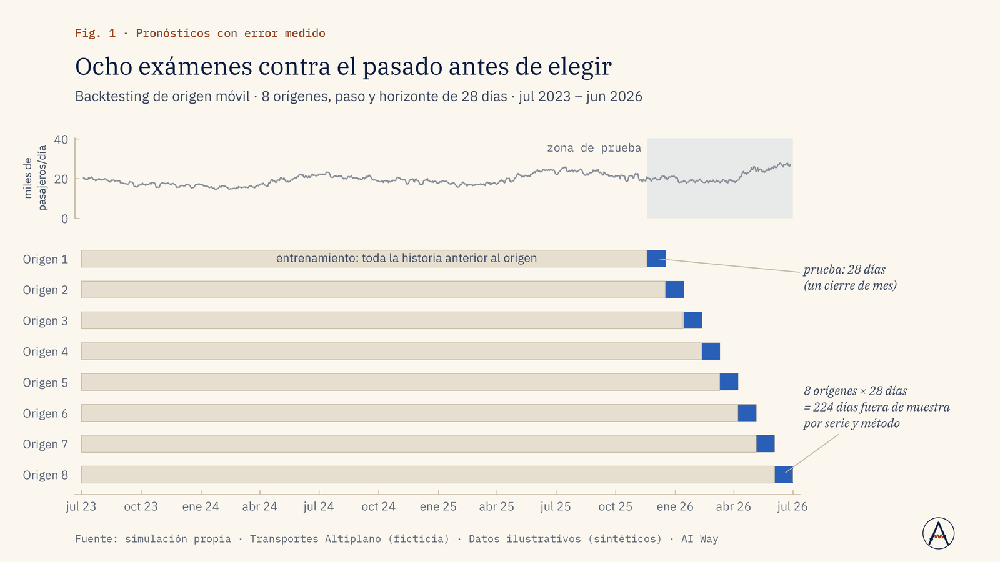
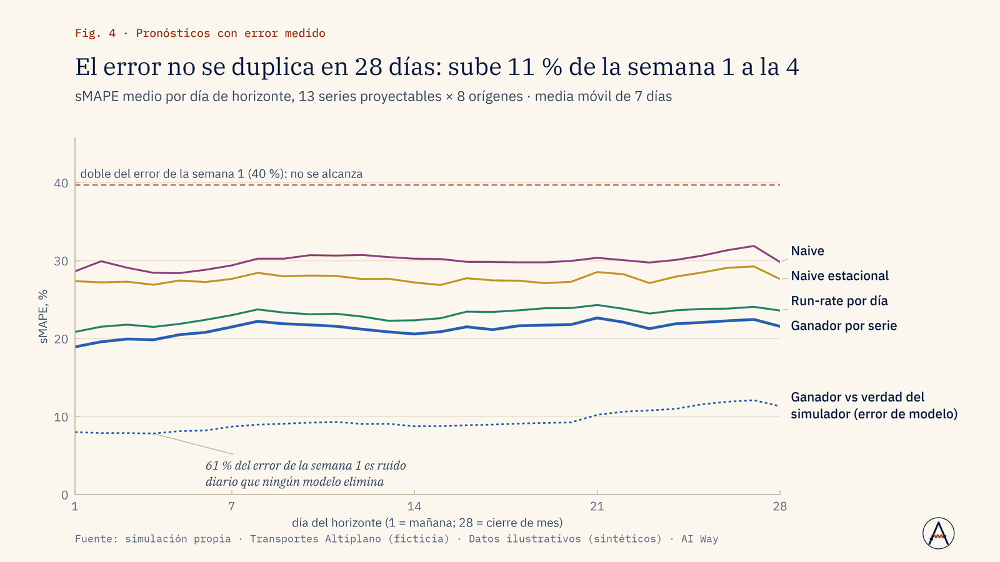
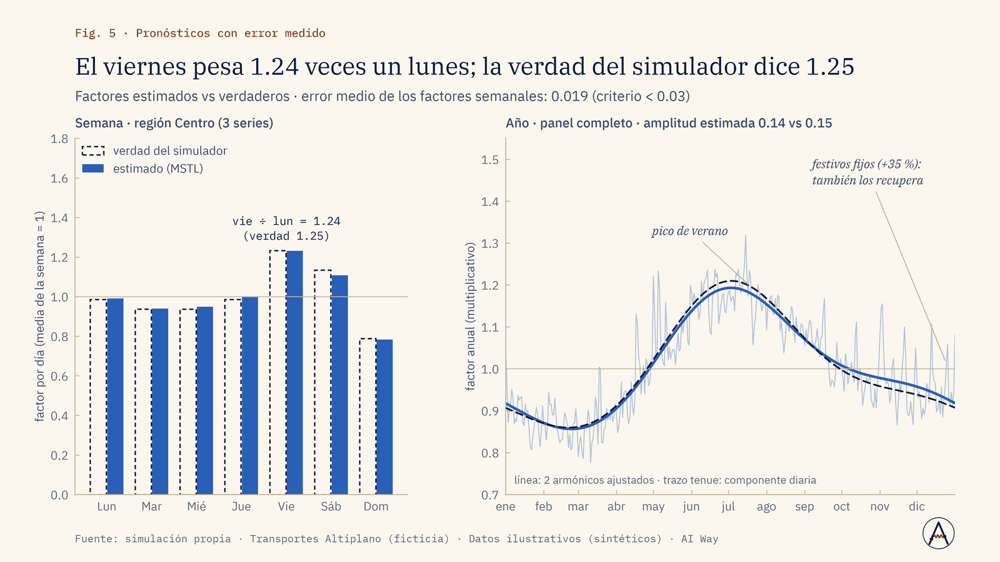

Ventas e ingresos
¿Qué meta de ventas es realista para el próximo trimestre?
Pronosticamos por región y producto con el método que ganó el backtesting, con bandas del 80 y 95 %.
Fijar metas con su margen de error a la vista.
Servicio · Nº 02
El pronóstico se elige por su error medido contra el pasado, no por moda; y llega con una banda que dice cuánto se puede equivocar.
01 · El problema
Muchos pronósticos se eligen por moda (el modelo más sofisticado) o por la gráfica más bonita. Nadie mide si le gana a la regla simple «igual que la semana pasada».
El resultado: metas mal fijadas, inventario o flota mal dimensionados y bandas de confianza que proyectan ventas negativas. Antes de usar un número hay que saber qué tan equivocado puede estar.
02 · Enfoque
03 · Resultados de la demo
34 series sintéticas de pasajeros y vehículos: 12 rutas, 20 vehículos con demanda intermitente, una serie de solo 47 días y un paseo aleatorio. El método se elige por su error en un backtesting de 8 orígenes × 28 días, contra baselines que pueden ganar, y se compara con la verdad del simulador.
Holt-Winters log le gana al naive estacional en 12 de 13 series
Fuente: simulación propia · Transportes Altiplano (ficticia) · Datos ilustrativos (sintéticos) · AI Way
Bandas que respetan el cero y cubren 79 % de lo real
Fuente: simulación propia · Transportes Altiplano (ficticia) · Datos ilustrativos (sintéticos) · AI Way



04 · Límites declarados
05 · Aplicaciones de negocio
Ejemplos de decisiones que este servicio ayuda a tomar; el alcance se define en el diagnóstico.
Ventas e ingresos
Pronosticamos por región y producto con el método que ganó el backtesting, con bandas del 80 y 95 %.
Fijar metas con su margen de error a la vista.
Marketing
La estacionalidad semanal y anual, con festivos, muestra cuándo sube y baja la demanda y con qué margen.
Programar pauta y promociones según la demanda esperada.
Operación
Proyectamos la demanda diaria por ruta o sucursal; las series intermitentes se eligen por su total del mes.
Dimensionar turnos y unidades sin que sobren ni falten.
Inventario y compras
Usamos el límite alto de una banda calibrada, cuya cobertura verificamos contra el pasado, como colchón.
Definir el nivel de compra según el riesgo que aceptas.
Riesgo
Monitoreamos la deriva: alertamos cuando lo real sale de la banda de forma repetida y reentrenamos.
Investigar un quiebre a tiempo, no en el cierre de mes.
Dirección y estrategia
Comparamos cada método contra la regla simple con MASE y sMAPE; si gana la regla simple, lo decimos.
Elegir método o proveedor por error medido, no por moda.
06 · Paquetes
Hasta 10 series, 3 baselines + 2 modelos, backtesting y pronóstico a un horizonte, nota metodológica.
Duración típica: 2 semanas
Hasta 200 series jerárquicas (región × producto), festivos y regresores, intervalos calibrados, tabla para BI y tablero real vs. pronóstico.
Duración típica: 4 a 6 semanas
Miles de series, reconciliación jerárquica, reentrenamiento y monitoreo de deriva en la nube del cliente, escenarios what-if y soporte mensual.
Duración típica: 8 a 12 semanas + operación
Sin precios publicados: cada propuesta se cotiza tras un diagnóstico de alcance.
07 · Preguntas frecuentes
Para estacionalidad anual, idealmente dos años; con menos, se usan baselines y se declara.
Se prueban modelos de ML y fundacionales, pero solo se quedan si ganan en el backtesting.
Se incluyen como regresores si hay calendario; si no, se marcan como fuente de error.
Según la cadencia del negocio (diaria, semanal o mensual), con alerta de deriva.
08 · Descarga
Presentación de la demo (PDF, 1.8 MB). El caso completo: problema, método, resultados contra criterio y límites declarados.
Descargar PDFSiguiente paso
En una llamada de 30 minutos revisamos si se puede, cómo lo mediríamos y qué no te podemos prometer.
Otros servicios